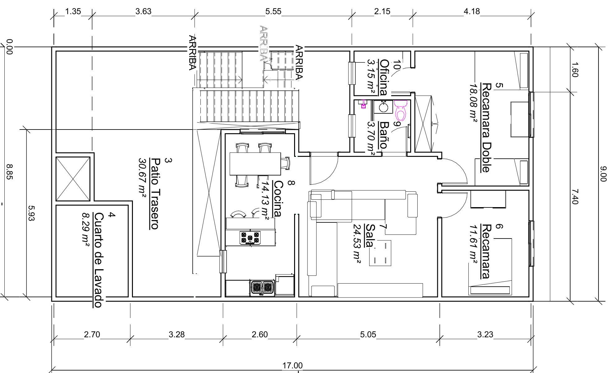
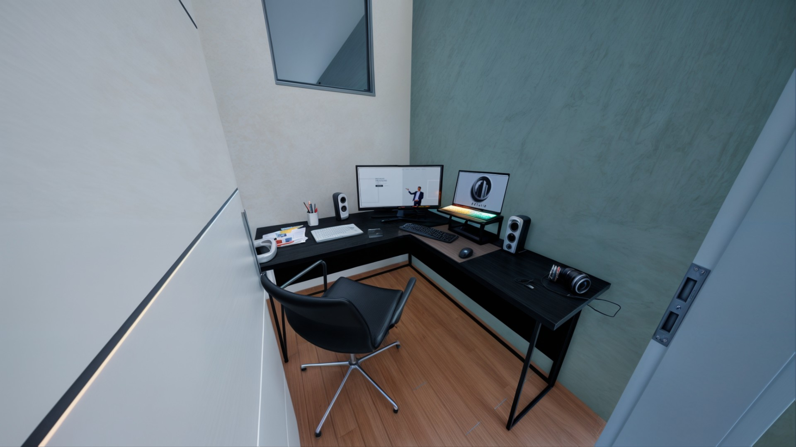
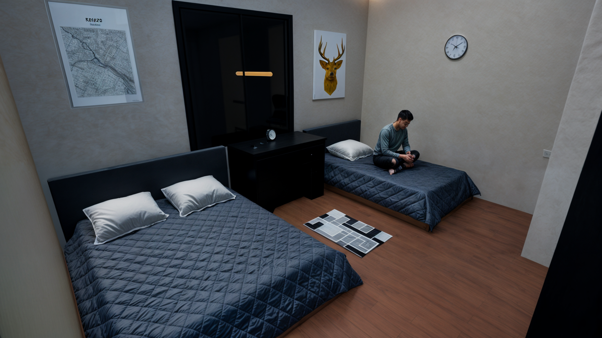

Proyecto: Vivienda Unifamiliar
El presente proyecto se centra en el diseño y construcción de una vivienda unifamiliar que refleja las necesidades de una familia moderna. Ubicada en un entorno urbano consolidado, esta propuesta arquitectónica tiene como objetivo ofrecer espacios confortables, funcionales y sostenibles para sus habitantes. La vivienda se desarrolla sobre un terreno de dimensiones óptimas para una construcción de estas características, con una orientación que maximiza el aprovechamiento de la luz natural y la ventilación cruzada. El diseño sigue los principios del minimalismo arquitectónico, una corriente que prioriza la simplicidad formal y la funcionalidad espacial. Esto se traduce en un espacio que elimina elementos superfluos y favorece líneas limpias, colores neutros y acabados de alta calidad. El proyecto también incorpora materiales duraderos y sistemas constructivos eficientes, cumpliendo con los estándares actuales de seguridad estructural y sostenibilidad
El terreno de 153 metros cuadrados, ubicado en Calle Me Voy 365, se encuentra en una zona urbana de la Colonia Esperanza, Nezahualcóyotl, Estado de México. Este lote tiene una geometría regular con un frente de 9 metros y un fondo de 17 metros.
Su orientación permite el diseño de espacios iluminados y ventilados de manera natural, con un patio trasero situado al norte, que ocupa aproximadamente una cuarta parte de la superficie total del terreno. Este patio se concibió como un espacio abierto destinado a actividades recreativas y de descanso, además de servir como punto de ventilación para el interior de la vivienda.
La zona cuenta con acceso a infraestructura básica proporcionada por el municipio, incluyendo redes de agua potable, drenaje sanitario y suministro eléctrico. El entorno inmediato está compuesto principalmente por viviendas unifamiliares y pequeños comercios, lo que garantiza un ambiente tranquilo y residencial. La cercanía a servicios como transporte público, escuelas y tiendas de abarrotes añade conveniencia para los residentes.
El diseño de la vivienda unifamiliar se estructura en una sola planta, lo que facilita el acceso y movilidad de sus habitantes. La distribución de los espacios responde a una separación clara entre las áreas sociales, privadas y de servicio. Cada una de estas zonas ha sido diseñada con criterios de funcionalidad, comodidad y privacidad, atendiendo las necesidades específicas de los usuarios.
El patio trasero es un elemento fundamental del diseño, funcionando como una extensión del espacio habitable y proporcionando un lugar al aire libre para actividades recreativas. El diseño minimalista de la vivienda se refuerza con el uso de colores claros, líneas rectas y acabados que transmiten modernidad y limpieza visual.
La zona social, que incluye la sala, comedor y cocina, se organiza en un esquema de planta abierta. Esta configuración permite una mayor interacción entre los habitantes y aprovecha al máximo la entrada de luz natural. La zona privada está compuesta por dos recámaras ubicadas al frente de la vivienda, separadas de las áreas comunes mediante muros y puertas, para garantizar la tranquilidad de los ocupantes. Por último, la oficina y el baño completo se ubican en áreas estratégicas que aseguran su accesibilidad sin interferir con la circulación principal.
La cimentación de la vivienda se basa en un sistema de zapatas aisladas conectadas mediante trabes de cimentación. Este sistema es adecuado para las condiciones del suelo y las cargas que genera una construcción de una planta. Las zapatas están diseñadas para distribuir uniformemente las cargas verticales sobre el terreno, mientras que las trabes de cimentación aseguran la estabilidad de la estructura y la absorción de esfuerzos horizontales.

El sistema estructural principal está compuesto por marcos rígidos de concreto armado, diseñados para soportar las cargas muertas y vivas de la edificación, así como para resistir los movimientos sísmicos característicos de la región. Estos marcos incluyen columnas de 30 x 30 cm y vigas de concreto que en conjunto forman una estructura robusta y confiable.
En los muros, se emplean bloques huecos de concreto de 20 cm de ancho, que ofrecen una excelente combinación de resistencia y aislamiento térmico. La cubierta de la vivienda está formada por lozas macizas de concreto que, además de proporcionar aislamiento acústico y térmico, ofrecen una base sólida para futuros proyectos, como la instalación de sistemas fotovoltaicos o tanques de almacenamiento.
En el diseño y construcción de la vivienda se han seleccionado materiales de alta calidad que combinan funcionalidad, estética y sostenibilidad. Los muros exteriores e interiores están construidos con bloques huecos de concreto de 20 cm, que son recubiertos con estuco para un acabado liso y uniforme. Posteriormente, se aplican capas de pintura blanca y de tonos claros, que potencian la iluminación natural y crean un ambiente acogedor.

El piso de toda la vivienda está revestido con cerámica estilo madera, un material que no solo es resistente al desgaste y fácil de limpiar, sino que también aporta calidez visual y una textura agradable. Las puertas y ventanas están fabricadas con aluminio anodizado, lo que garantiza durabilidad y un mantenimiento sencillo. Las ventanas incluyen vidrio transparente de alta calidad para maximizar la entrada de luz.
En cuanto a los techos, se han construido con lozas macizas de concreto que ofrecen resistencia y protección contra las inclemencias del tiempo. Además, los acabados en los techos siguen la línea minimalista, con colores neutros y texturas uniformes que complementan el diseño general de la vivienda.